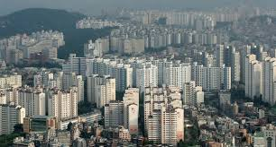

- 시사
- 경제
- 게임
공시가 증세’ 약발 안 받네, 서울 아파트값 다시 뛴다
서울에서 아파트값이 뛴 지역은 대체로 집값이 싼 지역이다. 상승 폭이 가장 큰 곳은 중랑구다. 0.08% 올라 전 주(0.03%)의 두배 이상 뛰었다. 강북구(0.03%), 노원구(0.03%), 관악구(0.03%)가 뒤를 이었다.
강남구는 전주에 이어 아파트값이 0.01% 하락했다. 서초구(0.00%)는 별 변동이 없었고, 송파구는 0.01% 올랐다.
지난 10주간 보합세를 유지한 서울 아파트값이 다시 고개를 든 가장 큰 이유는 전셋값 상승이다.
이달 첫째 주 서울 아파트 전셋값은 0.12% 올라 71주 연속 상승세가 이어졌다. 상승 폭도 직전 주보다 0.02%포인트 커졌다. 지난 7월 말 ‘임대차 2법’(전·월세 상한제, 계약갱신청구권)이 국회 상정 3일 만에 시행된 여파다.
세입자가 계약갱신청구권을 사용하면서 기존 전세물건이 시장에 나오지 않는 데다 보유세 부담이 커진 집주인이 당장 현금을 받을 수 있는 월세나 반전세를 선호하기 때문이다.
실제 6월 0.24%였던 서울 아파트 전셋값 상승률은 임대차 2법이 시행된 7월 0.45%, 8월 0.65%, 9월 0.60%로 커졌다.
월세도 오르고 있다. 6월 0.05%였던 서울 아파트 월세 상승률은 7월 0.09%, 8월 0.13%, 9월 0.14%로
급등했다.
